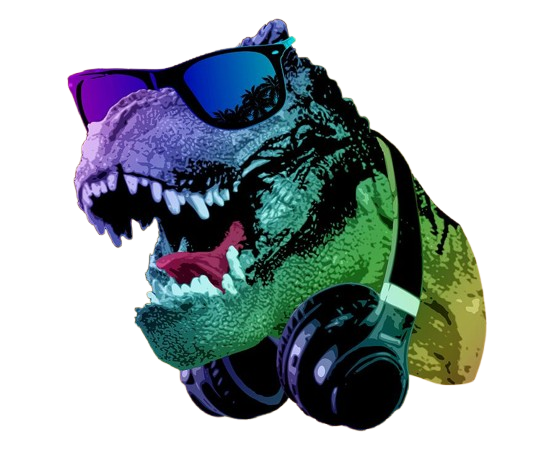
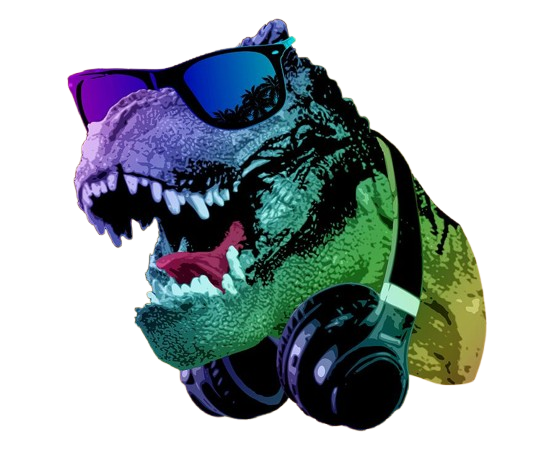
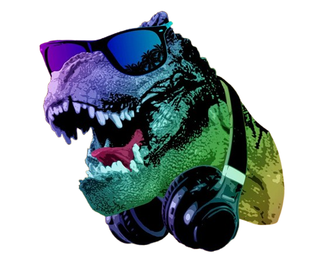

The Tyrannosaurus rex, often called T. rex, is one of the most iconic and fearsome dinosaurs to have ever walked the Earth. Living approximately 68 to 66 million years ago during the late Cretaceous period, it was a massive predator, measuring up to 40 feet long and standing around 12 feet tall at the hips. With powerful hind legs for swift movement and a set of serrated, bone-crushing teeth, the T. rex was built to dominate its ecosystem. Despite its terrifying reputation, recent discoveries suggest that it may have also been a scavenger, feasting on carrion when the opportunity arose. Its tiny arms, often a subject of humor, were incredibly strong and may have played a role in holding prey or aiding in other tasks. As one of the last dinosaurs to exist before the mass extinction event, the T. rex continues to capture the imagination of scientists and the public alike. Its legacy lives on, both in fossil records and popular culture.

The T. rex has cemented itself as a pop culture icon, particularly through its legendary appearances in movies and TV shows. It first roared into public consciousness with films like Jurassic Park, where its towering presence and bone-chilling roar brought a mixture of awe and terror to audiences. The T. rex has become synonymous with dinosaurs in general, often portrayed as the ultimate apex predator with unmatched power. In animation and children's programming, it frequently appears as a friendly or heroic character, introducing younger generations to the prehistoric world. This dynamic range—from fearsome antagonist to endearing protagonist—has solidified its role as a versatile symbol of ancient power and modern storytelling. Its influence continues, as it often takes center stage in documentaries, blockbusters, and even merchandise, captivating audiences of all ages.
Official Jurrasic Park Website